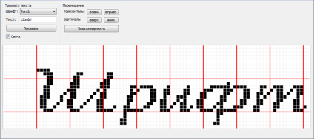
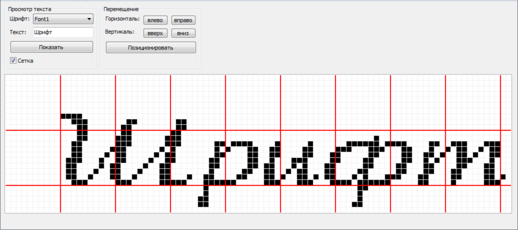
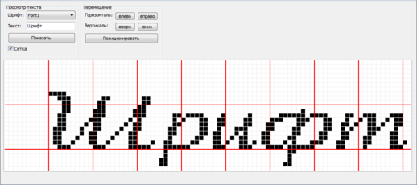

Программа «Просмотрщик Шрифтов – Fonts Viewer»

Платформа:
Версия: 1.3
Дата последнего обновления: 13.09.2020
Описание: Программа подойдёт людям, которые всегда хотели иметь свой шрифт. А так же для людей, которым необходимо правильно расположить текст на клетчатом поле для дальнейшего его использования.
Особенности:- Создание и редактирование букв и символов любой сложности.
- Просмотр слов и словосочетаний, состоящих из букв и символов ранее созданных шрифтов.
- Позиционирование низа букв и символов.
- Включение и отключения сетки размером 10х10 клеток.
- Бегущая строка.
- Наличие автоматической проверки обновления.
Скриншоты:


 




Ссылка:
Статья с помощью по программе: